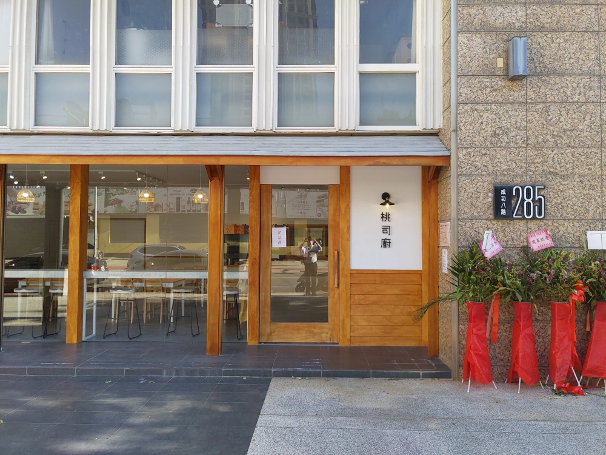
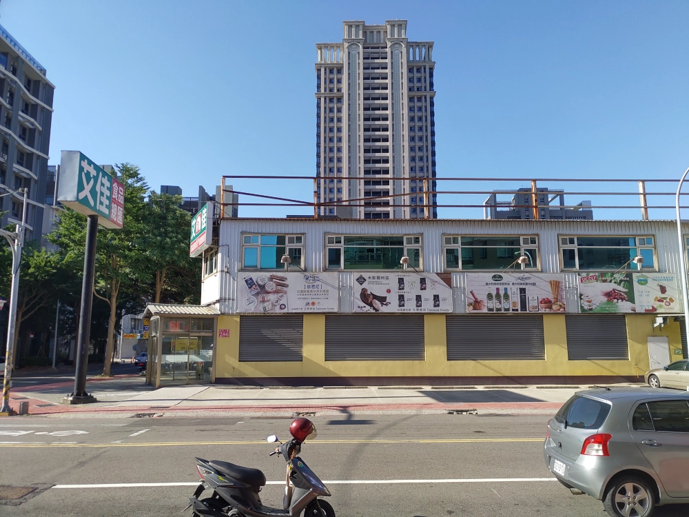
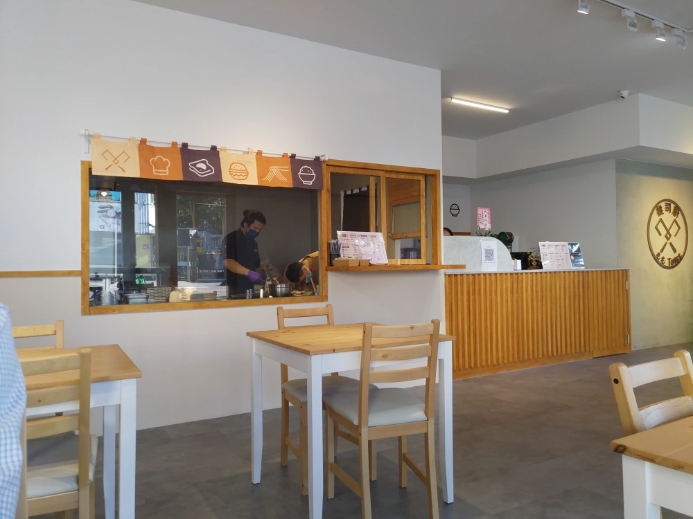
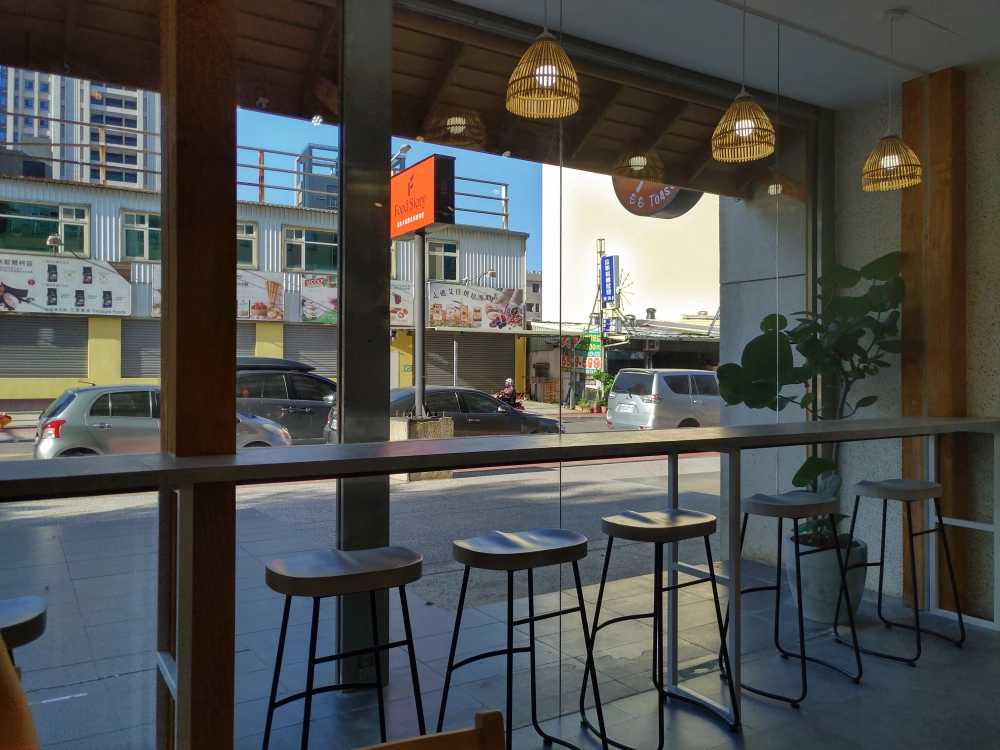
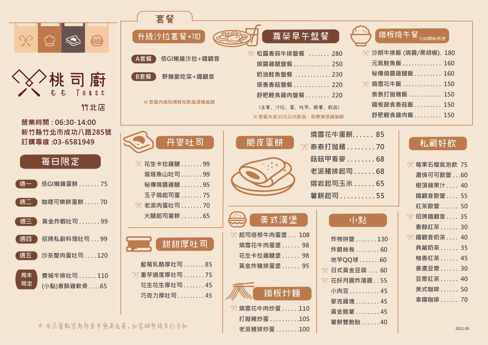
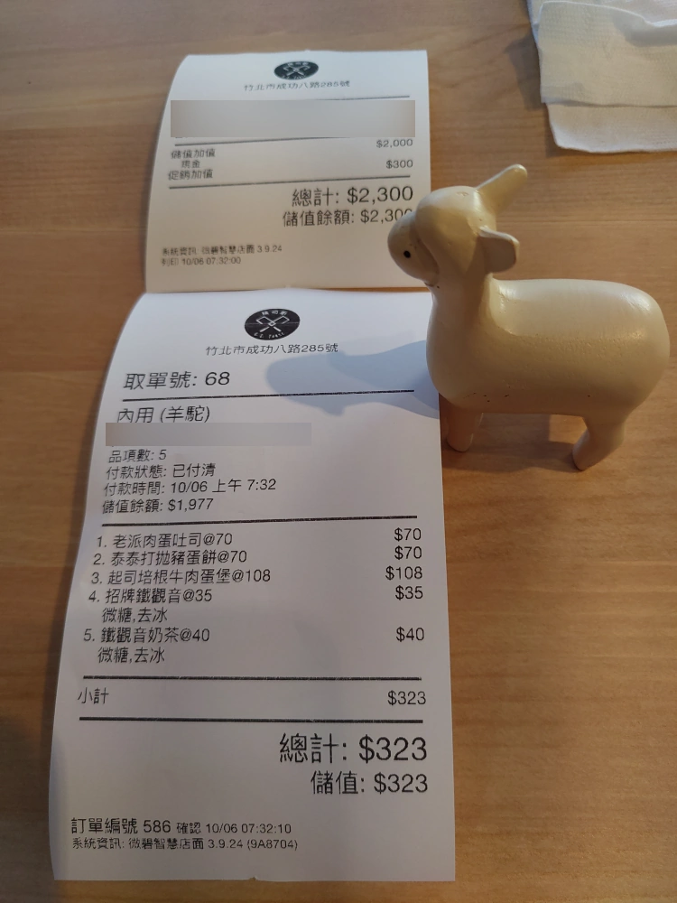
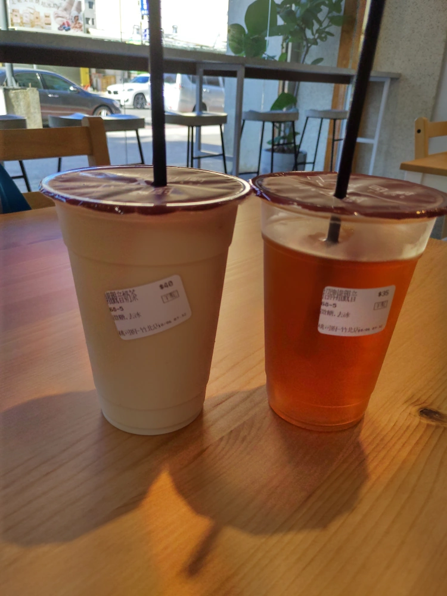
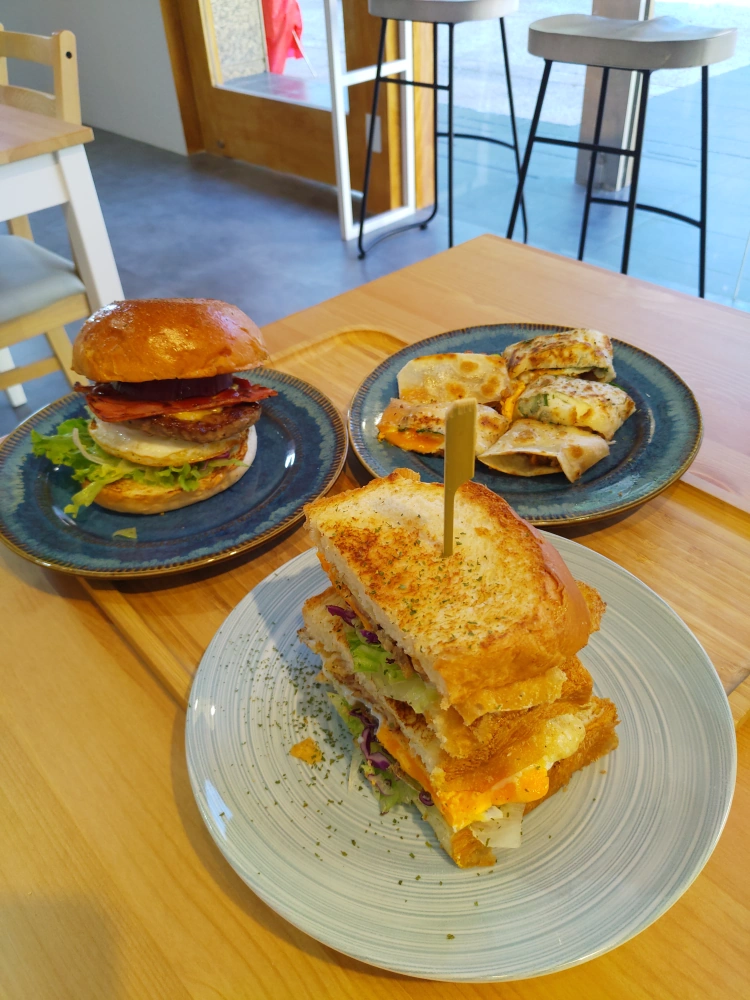
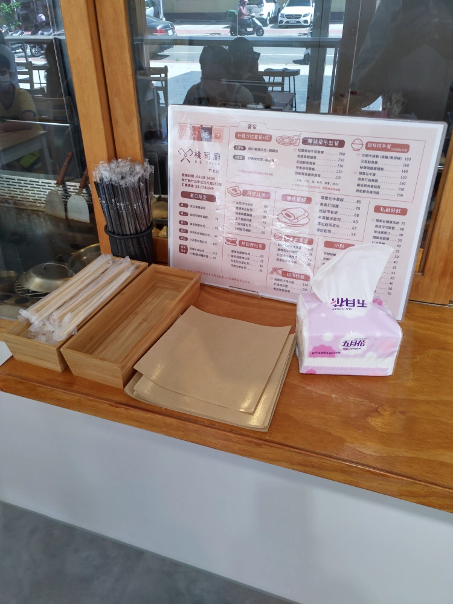

[竹北] 桃司廚
| 餐廳名稱: | 桃司廚-竹北店 |
|---|---|
| 地 址: | 新竹縣竹北市成功八路285號 |
| 營業時間: | 週一 ~ 週日 06:30 - 14:00 (竹北店試營運中，建議還是查一下官網) |
| 電 話: | 03-6581949 |
本貓還蠻愛燒餅油條這類早餐的，但是很無奈，自從美而美 這種西式早餐成功後，各式各樣的美而美席捲台灣，包括巨林、瑞麟、美芝城、弘爺、拉亞…等，燒餅油條越來越少。 這些西式早餐店，本貓統稱為美而美類型。
美而美類型的早餐，最近幾年，當然也知道要做出區隔化，不然內容都一樣，就只能拚價格了。 而所謂的區隔化，大部分選的路線就是越來越高級，然後產品越來越貴，針對的客群自然是金字塔中上層的人。 幸好本貓對外哭窮保護自己，對內則是不斷地攢錢，今天就來砸錢試試新開的高價美而美 - 桃司廚-竹北店。
桃司廚-竹北店這個成功八路的位置， 以前是小有名氣的 J’eat 與鞋店，不過他們搬家很久了，桃司廚將全部空間重新打造，蠻寬敞的。 這次是停車在轉角自強五路，有幾個停車格，早上似乎停的人不多，到的時候還剩兩、三個位子。其他時段就不知道好不好停了。  桃司廚-竹北店的對面，是招牌很大的艾佳食品總匯，裡面是賣一些食材原料、烘培用品等。 早餐時段，艾佳還沒開門。 
店內目前很寬敞，也許是疫情期間，桌椅放少一點。 右邊是點餐櫃檯，左邊是廚房，號稱是專業鐵板燒的器材、料理手法。 舊型的美而美雖然煎台也是一塊鐵板，但還不是專業鐵板燒等級。 
對上艾佳的窗戶那面，設計了適合單人的一排座位。 
菜單是引用官方網站的，比較清楚。可以看到，價格雖然高，但份量其實也多，看你怎麼想囉。 
剛試營運，有活動，儲值2000，送300，女王腦波弱，就辦了。今天點了323元，可以很阿Q地認為今天只花23元。  桃司廚沒桌號，是給你一隻可愛動物，這次是羊駝。
櫃台呼叫羊駝，先給飲料。鐵觀音茶 與 鐵觀音奶茶 是桃司廚的招牌，果然是不錯喝。 
櫃台再次呼叫羊駝，餐點都齊了。打拋豬蛋餅是點來分享的，比較少吃到這口味的蛋餅，新奇，也好吃。  起司培根牛肉漢堡 體積龐大，肉質吃起來感覺等級還不錯，整體感覺比附近美芝城的培根牛肉堡大很多， 口味也優秀很多，只是美芝城賣60元，這邊是108元，當然要有這種明顯差距。
老派肉蛋吐司是女王點的，我咬了一口，也是好吃。分量一樣巨大，女王只能吃得下一半，剩下就自己打包了。
桃司廚上菜用陶瓷的盤子，質感很好，但沒有防水紙套把漢堡放進去。已經蠻多專業漢堡店是把漢堡放在防水紙套中，這樣吃完手才不會油油的。 不過我也理解桃司廚收費又遠低於專業漢堡店，可能也不好再增加成本。 桃司廚包裝的略高級，氛圍佳，食材也不錯，感覺價格與食物等級相符合，本貓仍然覺得值得推薦桃司廚。
Updated 2021-Oct-09: 原來有吃漢堡用的防水紙，在免洗餐具旁邊，誤會桃司廚了。
另外，又發現有一位客人去櫃檯抱怨太鹹，煩不煩啊，自己去找口味清淡的店好嗎! 本貓是重口味派，也不會到清淡店叫囂口味要重一點啊。自以為清淡代表健康，查一下各國健康指標好嗎? 日本吃的比我們鹹多了，高血壓比例比台灣高嗎? 